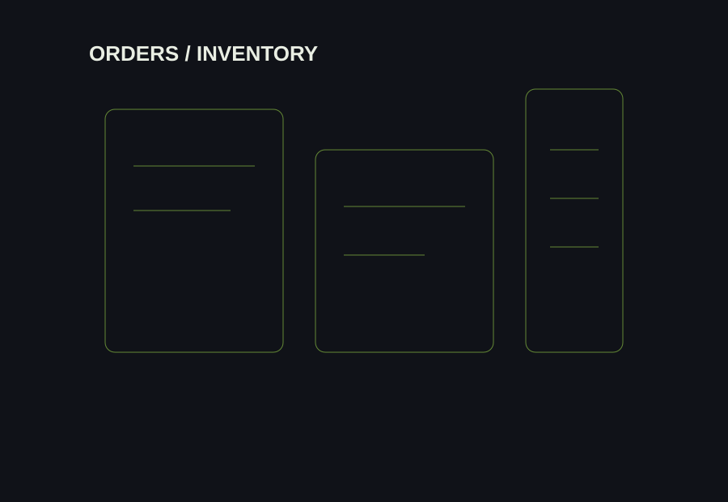

Role overview
Worked at the intersection of customer orders and stock movement, helping ensure that orders were ready and dispatched accurately.
Managed order fulfillment and inventory workflows, monitored stock availability and supported accurate, on-time dispatch.

Worked at the intersection of customer orders and stock movement, helping ensure that orders were ready and dispatched accurately.
Customer order handling; fulfillment and dispatch; stock availability monitoring; inventory movement; coordinating order and stock information; supporting accurate and timely dispatch.
This role established the practical operations base that later expanded into broader e-commerce management, purchasing and automation work.
Hands-on understanding of order flow, inventory visibility, stock readiness and the importance of accurate execution.
Each role adds a different layer to Prince's operating experience — customer communication, order flow, inventory, e-commerce management and automation.
Explore all experience ↗